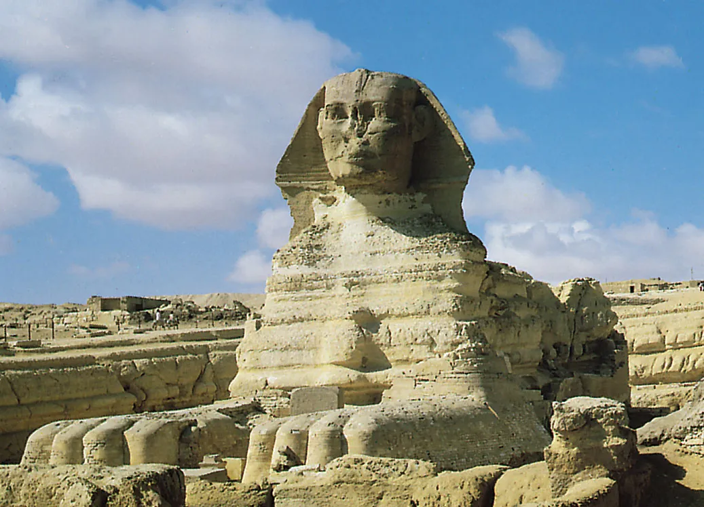
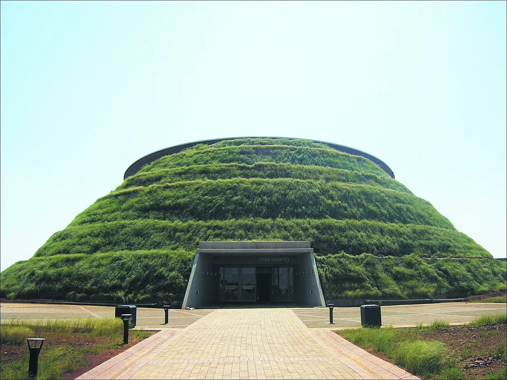

Built around 2550 BC as royal tombs for Pharaohs Khufu, Khafre, and Menkaure, these limestone monuments required tens of thousands of skilled workers and engineers. As the sole surviving Wonder of the Ancient World, they embody ancient Egypt’s mastery of astronomy and stonecraft.

Great Sphinx of Giza
Giza
Carved from a single ridge of Giza bedrock around 2500 BC with the body of a lion and the royal headdress of Pharaoh Khafre, this 73-meter guardian watches over the desert plateau. For millennia, Egyptians revered it as a solar deity.
Karnak Temple Complex
Luxor
Expanded over 1,500 years by more than thirty pharaohs, Karnak is the largest ancient religious complex ever built, anchored by a forest of 134 colossal sandstone columns. Priests, artisans, and monarchs made it the spiritual engine of New Kingdom Egypt.
South Africa
3 historic landmarks
Robben Island
Western Cape
For nearly four centuries, this island off Cape Town served as a place of banishment, a leper colony, and a maximum-security prison for anti-apartheid activists. Nelson Mandela spent 18 of his 27 prison years here; political prisoners forged a vision of democratic, non-racial South Africa.
Castle of Good Hope
Cape Town
Built between 1666 and 1679 by the Dutch East India Company as a maritime replenishment station, this pentagonal bastion is South Africa’s oldest surviving colonial building. Its walls witnessed early clashes between European settlers and indigenous Khoikhoi communities.

Cradle of Humankind
Gauteng
Beneath limestone caves northwest of Johannesburg, paleoanthropologists uncovered some of the oldest and richest hominin fossils ever found, dating back over two million years. This valley connects every human alive today to shared African evolutionary roots.